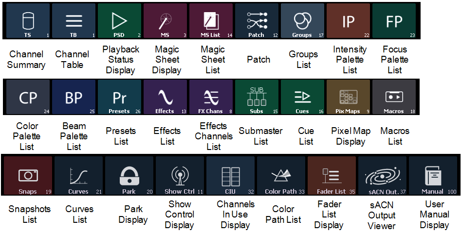

The following displays can be selected, and they will open in a new tab in the selected frame:

The following displays can have multiple instances open:
For multiple instances of the same display, the tab number will be followed with a decimal number. Additional tabs will start their numbering with n.2. If you have only one instance, there will be no decimal number.